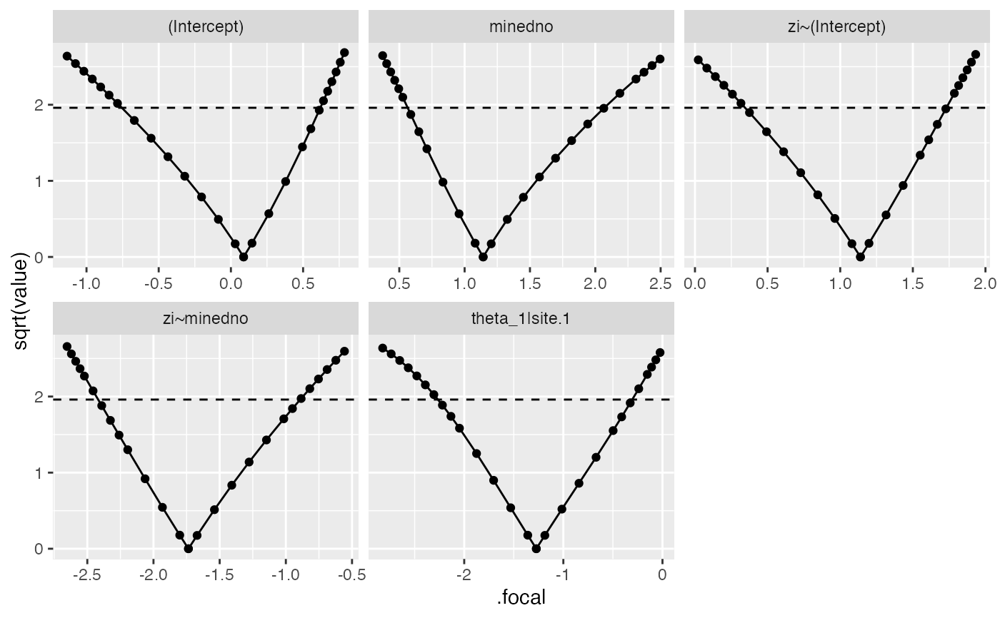

Compute likelihood profiles for a fitted model
# S3 method for glmmTMB
profile(
fitted,
parm = NULL,
level_max = 0.99,
npts = 8,
stepfac = 1/4,
stderr = NULL,
trace = FALSE,
parallel = c("no", "multicore", "snow"),
ncpus = getOption("profile.ncpus", 1L),
cl = NULL,
...
)
# S3 method for profile.glmmTMB
confint(object, parm = NULL, level = 0.95, ...)a fitted glmmTMB object
which parameters to profile, specified
by index (position)
by name (matching the row/column names of vcov(object,full=TRUE))
as "theta_" (random-effects variance-covariance parameters) or "beta_" (conditional and zero-inflation parameters)
maximum confidence interval target for profile
target number of points in (each half of) the profile (approximate)
initial step factor (fraction of estimated standard deviation)
standard errors to use as a scaling factor when picking step
sizes to compute the profile; by default (if stderr is
NULL, or NA for a particular element),
uses the estimated (Wald) standard errors of the parameters
print tracing information? If trace=FALSE or 0,
no tracing; if trace=1, print names of parameters currently
being profiled; if trace>1, turn on tracing for the
underlying tmbprofile function
method (if any) for parallel computation
number of CPUs/cores to use for parallel computation
cluster to use for parallel computation
additional arguments passed to tmbprofile
a fitted profile (profile.glmmTMB) object
confidence level
An object of class profile.glmmTMB, which is also a
data frame, with columns .par (parameter being profiled),
.focal (value of focal parameter), value (negative log-likelihood).
Fits natural splines separately to the points from each half of the profile for each specified parameter (i.e., values above and below the MLE), then finds the inverse functions to estimate the endpoints of the confidence interval
if (FALSE) {
m1 <- glmmTMB(count~ mined + (1|site),
zi=~mined, family=poisson, data=Salamanders)
salamander_prof1 <- profile(m1, parallel="multicore",
ncpus=2, trace=1)
## testing
salamander_prof1 <- profile(m1, trace=1,parm=1)
salamander_prof1M <- profile(m1, trace=1,parm=1, npts = 4)
salamander_prof2 <- profile(m1, parm="theta_")
}
salamander_prof1 <- readRDS(system.file("example_files","salamander_prof1.rds",package="glmmTMB"))
if (require("ggplot2")) {
ggplot(salamander_prof1,aes(.focal,sqrt(value))) +
geom_point() + geom_line()+
facet_wrap(~.par,scale="free_x")+
geom_hline(yintercept=1.96,linetype=2)
}
#> Loading required package: ggplot2

salamander_prof1 <- readRDS(system.file("example_files","salamander_prof1.rds",package="glmmTMB"))
confint(salamander_prof1)
#> 2.5 % 97.5 %
#> (Intercept) -0.4686460 0.4805030
#> minedno 0.6449938 1.7417972
#> zi~(Intercept) 0.6088771 1.5648495
#> zi~minedno -2.2239195 -1.1665205
#> theta_1|site.1 -1.9452621 -0.5786442
confint(salamander_prof1,level=0.99)
#> 0.5 % 99.5 %
#> (Intercept) -0.6830922 0.5865649
#> minedno 0.6015779 1.9853898
#> zi~(Intercept) 0.4108581 1.6910201
#> zi~minedno -2.3713049 -0.9600516
#> theta_1|site.1 -2.1810585 -0.3697326